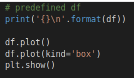
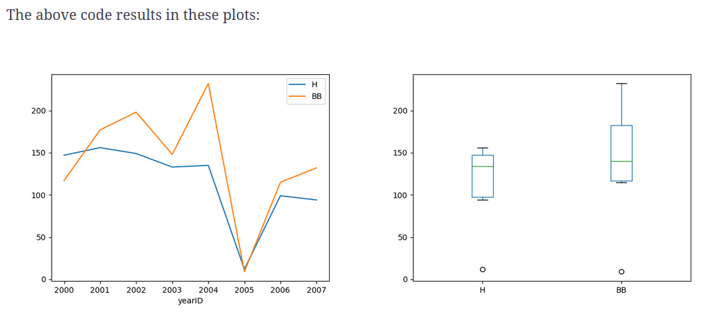

Plotting
Chapter Goals:
• Learn how to plot DataFrames using the pyplot API
~~~~~~~~~~~~~~~~~~~~~~~~~~~~~~~~~
BasicsThe main function used for plotting DataFrames is
plot. This function is used in tandem with the
show function from the pyplot API, to produce plot visualizations. We import the pyplot API with the line:
import matplotlib.pyplot as plt After calling
df.plot, which creates our line plot, we then use
plt.show to open a separate window containing the visualization of the plot. You can also use
plt.savefig to save the plot to a PNG or PDF file.
The plot we created has no title or
y-axis label. We can manually set the plot's title and axis labels using the pyplot API.
We use the
title function to set the title of our plot, and the
xlabel and
ylabel functions to set the axis labels.
~~~~~~~~~~~~~~~~~~~~~~~~~~~~~~~~~
Other plotsIn addition to basic line plots, we can create other plots like histograms or boxplots by setting the
kind keyword argument in
plot.
There are numerous different kinds of plots we can create by setting the
kind keyword argument. A list of the accepted values for
kind can be found in the
documentation for
plot.
~~~~~~~~~~~~~~~~~~~~~~~~~~~~~~~~~
Multiple featuresWe can also plot multiple features on the same graph. This can be extremely useful when we want visualizations to compare different features.
 
These are a line plot and boxplot showing both hits (
H) and walks (
BB). Note that the circles in the boxplot represent outlier values.